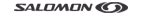

Partner
Danke für die Unterstützung
Bieler Sport Bonaduz unterstütz uns mit einem grossen Sortiment an Laufschuhen und -bekleidung. Die fachmännische Beratung schätzen wir sehr.

Salomon Running führend in der Trailrunning Szene
maler federspiel GmbH in Domat/Ems bringt Farbe in Ihr Leben! Neubauten, Renovationen, Farbberatung und Farbgestaltung führt das Team für Sie aus.
Graubündner Kantonalbank. Die Partnerin für Finanzierungen, Anlagen, Vermögensverwaltung und Ihre Vorsorge.
Run4Fun - eine spannende Site rund ums Laufen.